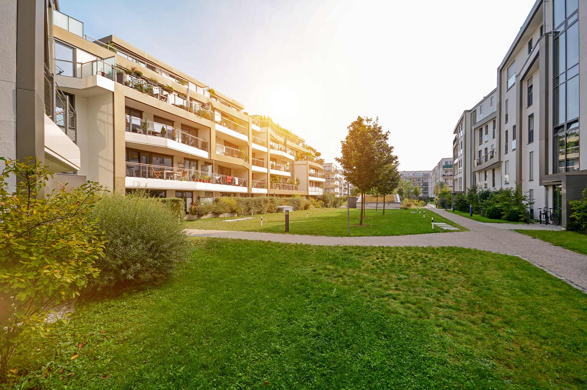
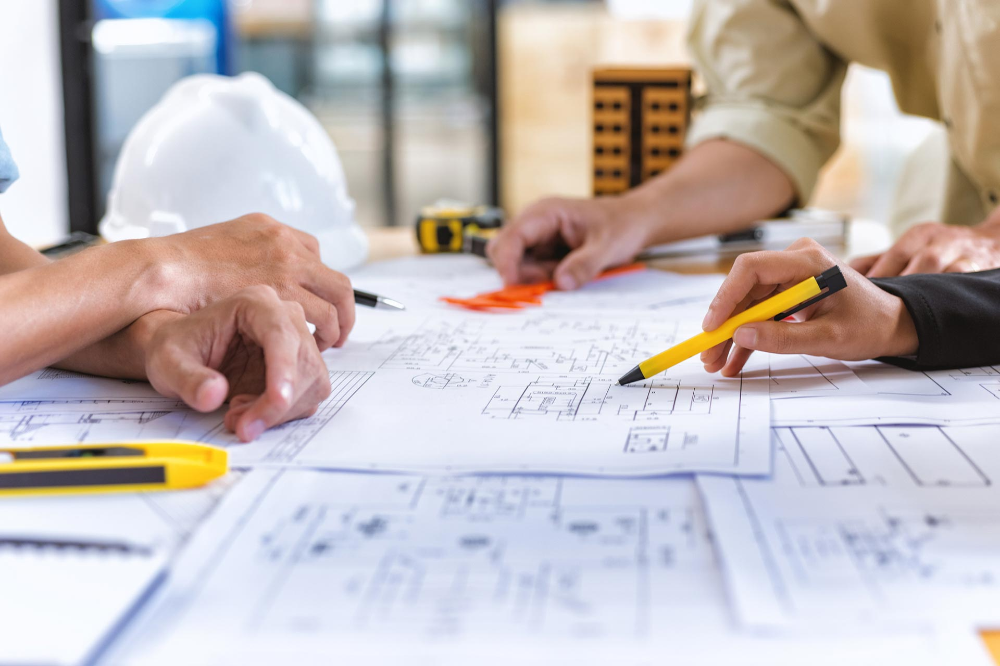
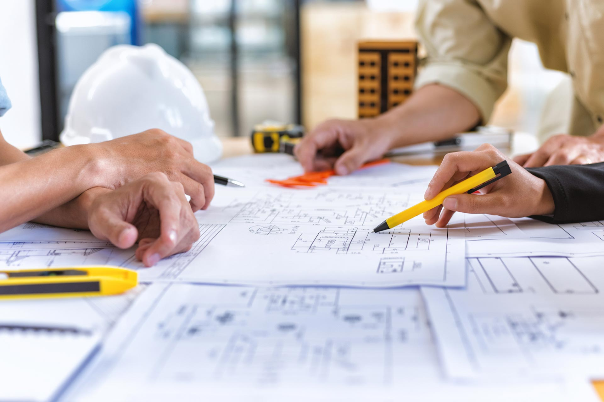

Deseo, idea y realidad
En a-Scala Studio trabajamos un equipo multidisciplinar de técnicos y diseñadores que queremos escuchar vuestras necesidades y deseos, evaluar la escala de vuestras ideas y proyectos, y ayudaros a transformar vuestros espacios y/o negocios.
Un estudio profesional con experiencia en temas urbanísticos
es imprescindible, junto a una visión global con un equipo
profesional con experiencia tanto en ejecución como en
tramitación urbanística y conocimientos de la
administración.
La apuesta por un modelo de trabajo integral en el que se coordine tanto el diseño como la ejecución desde proyecto, con integración de elementos técnicos desde el diseño, estudio de soluciones constructivas desde proyecto y una correcta gestión de la viabilidad urbanística garantizará la viabilidad y el éxito del mismo.
La apuesta por un modelo de trabajo integral en el que se coordine tanto el diseño como la ejecución desde proyecto, con integración de elementos técnicos desde el diseño, estudio de soluciones constructivas desde proyecto y una correcta gestión de la viabilidad urbanística garantizará la viabilidad y el éxito del mismo.
Gestionamos todos los trámites necesarios para conseguir su
licencia de actividad, tramitando con la ECU y el
Ayuntamiento la documentación.
Para abrir un negocio resulta necesario obtener previamente una licencia de actividad específica a través de la Agencia de Actividades del Ayuntamiento.
Para abrir un negocio resulta necesario obtener previamente una licencia de actividad específica a través de la Agencia de Actividades del Ayuntamiento.
Todos los edificios tienen una vida útil, con mayor o menor
resistencia frente al desgaste de todo tipo de agentes, y en
su estabilidad y durabilidad también influyen las
condiciones en las que se han levantado.
Por ello es necesario o realizar tareas de rehabilitación, restauración y mantenimiento de edificios. La rehabilitación abarca todas las actividades constructivas necesarias para el mantenimiento y mejora de:
Instalaciones - Accesibilidad - Eficiencia y ahorro energético - Habitabilidad de zonas comunes de edificios.
Por ello es necesario o realizar tareas de rehabilitación, restauración y mantenimiento de edificios. La rehabilitación abarca todas las actividades constructivas necesarias para el mantenimiento y mejora de:
Instalaciones - Accesibilidad - Eficiencia y ahorro energético - Habitabilidad de zonas comunes de edificios.
Planos, memoria, pliego y mediciones. Se realiza un estudio
inicial del proyecto y se elabora un programa de trabajo
para el desarrollo de la dirección de:
· Plan de calidad.
· Plan de costes.
· Plan de comunicaciones y documental.
· Plan de calidad.
· Plan de costes.
· Plan de comunicaciones y documental.
Contamos con todas las autorizaciones necesarias para la
tramitación de licencias de tipo urbanística.
Realizamos evaluaciones de edificios y otro tipo de
construcciones. También elaboramos informes técnicos sobre
arquitectura para diferentes supuestos.
Investigamos, diagnosticamos y valoramos, problemas en
Construcciones o en partes de la misma utilizando
metodologías y materiales adecuados para que las
conclusiones obtenidas sean objetivas.
Revisamos íntegramente el edificio: cimentaciones,
estructura, fachadas, cubierta, etc. verificando su estado
de conservación para garantizar las condiciones exigibles y
evitar riesgos para las personas y los bienes.
Si el edificio cuenta con las condiciones exigibles, emitimos un certificado de haber realizado la inspección técnica y un informe anexo que acreditará que no tiene deficiencias.
Si se apreciaran daños o desperfectos que impliquen deficiencias, el propietario, previa presentación de la Declaración Responsable de Obras, procederá a la ejecución de las que sean necesarias para su reparación o subsanación.
Una vez corregidas las deficiencias se presentará un Certificado de subsanación.
Si el edificio cuenta con las condiciones exigibles, emitimos un certificado de haber realizado la inspección técnica y un informe anexo que acreditará que no tiene deficiencias.
Si se apreciaran daños o desperfectos que impliquen deficiencias, el propietario, previa presentación de la Declaración Responsable de Obras, procederá a la ejecución de las que sean necesarias para su reparación o subsanación.
Una vez corregidas las deficiencias se presentará un Certificado de subsanación.
Gestión de licencias, urbanismo y tramitación con las
administraciones. Informes, peritaciones, certificados e
inspecciones técnicas. Asesoramiento y consultoría.


